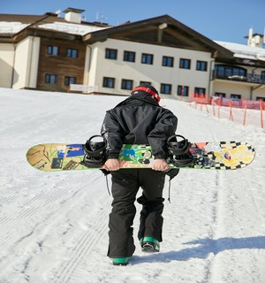
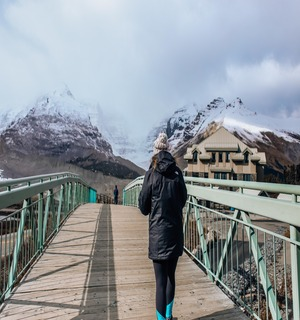

Attractions
Situated on a stunning coastline, the lodge boasts breathtaking panoramic views of turquoise waters,
pristine sandy beaches, and lush greenery. Nature enthusiasts can explore the lodge's surrounding areas and discover hidden gems,
such as scenic hiking trails, secluded coves, and vibrant marine life. With its convenient location,
Moffat Bay Lodge offers many exciting activities.
Nature lovers will find themselves captivated by the untamed beauty of the surrounding area.
Visitors can embark on guided hiking tours through the nearby rainforest, exploring hidden trails and encountering some of the most unique wildlife.
For those in search of relaxation, Moffat Bay Lodge offers an array of amenities to unwind and rejuvenate.
The lodge boasts a magnificent outdoor heated pool and spa facilities, providing the perfect setting to unwind and soak in the natural beauty of the surroundings.
Guests can also indulge in a luxurious massage or spa treatment, designed to soothe both the body and mind.
This is a breathtaking location!